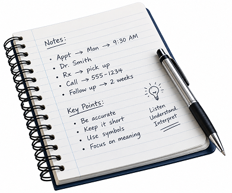
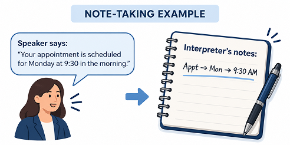

NOTE-TAKING TECHNIQUES
Good notes help interpreters remember important information without trying to write down every word.
Good note taking technique is crucial to be a good interpreter, and remember, that they do not have to understand what you write just you.

WHY TAKE NOTES?
Interpreters often need to remember names, numbers, dates, and important details. Short notes can help you remember the message while still focusing on the speaker. You should always try to take notes during this type of situation. Because these numbers could very much pop up again during the same conversation. It will save you a lot of energy to just write it down the first time.
NOTE-TAKING EXAMPLE
what that means is that you should use symbols, arrows ABC the capital letter or whatever letter to help you remember. The whole sentence could be a p h arrow o u s (a person help me to open up the shop.)
Speaker says:
"Your appointment is scheduled for Monday at 9:30 in the morning."
Interpreter's notes:
Appt → Mon → 9:30 AM
